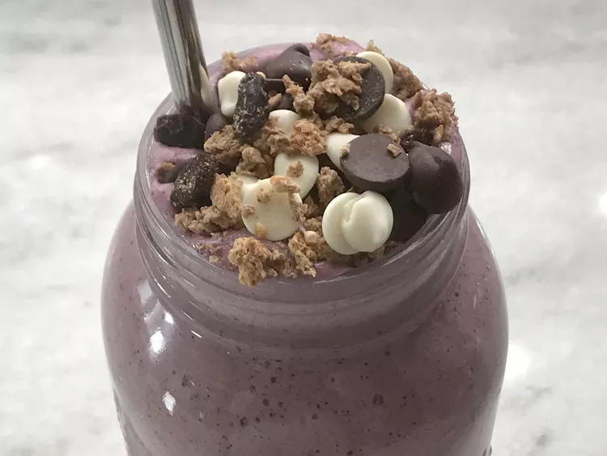

Easy Acai Smoothie Bowl

Description
This smoothie bowl has protein, natural sugar, and just enough liquid to make it a smoothie. I recommend trying it yourself.
Ingrediants:
- 1 cup fresh strawberries, quartered
- ½ cup milk
- ⅔ cup granola, divided
- ¼ cup blueberries
- 1 scoop protein powder
- 1 teaspoon vanilla extract
- ¼ cup chocolate chips
Directions
- Step 1
Combine strawberries, milk, 1/3 cup granola, blueberries, protein powder, and vanilla in a blender; blend until smooth.
- Step 2
Layer 1/2 of the chocolate chips on the bottom of a bowl. Pour smoothie over top, then sprinkle with remaining chocolate chips and remaining granola.